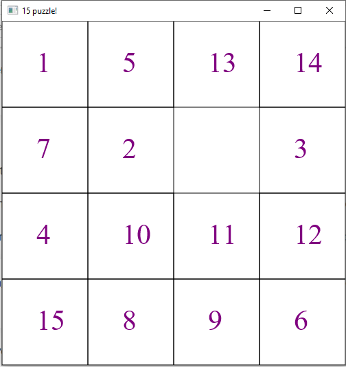

At the beginning of the game you see a big square
that contains 16 mini_squares, each square contains
a different number, except the number 16 because it's
hidden. What about playing? don't worry it's very simple,
each square next to that of number 16 had the right to
swap places with it, you can swap them by clicking on the
square which you want him to take its place. But what is
the main idea of the game? you must sort these numbers
from 1 to 16 by swapping and swapping till you reach the end.

Whenever you win, a win message will display on the screen